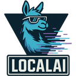

Free AI voice agents (2026)
AI voice agents that you can use without paying: open-source projects plus tools with a free plan. Here are the top 25 of 68 from the AgentScout directory.
Quick answer: the top picks on this list, ranked by GitHub stars and listing maturity, are LiteLLM, LocalAI and Fish Audio, out of 25 tools listed below. At a glance: 23 open-source, 24 free or freemium and 22 local or self-hosted across 25 link-checked tools (last verified ).
Verified on : every tool link on this page was checked by our daily link check. No paid placements.
Ranked comparison (top 10)
| # | Tool | Pricing | Best for | Open source | Runs locally | GitHub stars |
|---|---|---|---|---|---|---|
| 1 | Open source + cloud | build an agent, voice & phone calls | Yes | Self-hosted | 62,004 | |
| 2 |  LocalAI | Open source | voice & phone calls, computer vision | Yes | Offline | 49,943 |
| 3 | Fish Audio | Freemium | voiceover, voice & phone calls | No | 33,396 | |
| 4 | XiaoZhi ESP32 | Open source | voice & phone calls, connect tools via MCP | Yes | Self-hosted | 31,922 |
| 5 | FunASR | Open source | build an agent, voice & phone calls | Yes | Offline | 20,809 |
| 6 | Windmill | Open source + cloud | voice & phone calls, automate workflows | Yes | Self-hosted | 18,261 |
| 7 | Open source | build an agent, voice & phone calls | Yes | Self-hosted | 16,795 | |
| 8 | Open source + cloud | build an agent, voice & phone calls | Yes | Self-hosted | 14,934 | |
| 9 | Open source | voice & phone calls | Yes | Self-hosted | 10,032 | |
| 10 | Vision Agents | Open source | build an agent, voice & phone calls | Yes | Self-hosted | 8,185 |
Updated
How we picked and ranked: tools are matched by category, the pricing each maker states and what each tool says it does. They are ranked by GitHub stars as recorded on each listing (link checks 2026-10-26); tools without a tracked repo follow, by listing maturity. No paid placements.

1. LiteLLM
Open-source AI gateway and Python SDK that calls 100+ LLM providers in the OpenAI format, with cost tracking, guardrails, load balancing and logging.
Pricing (as stated): Open source + cloud · Mature
2. LocalAI
Self-hosted engine with an OpenAI-compatible API for running LLM, vision, voice and image models on your own hardware, including agents.
Pricing (as stated): Open source · Mature
3. Fish Audio
Fish Audio is a voice AI platform for text to speech, voice cloning and speech to text, with a real-time API for voice agents. Its Drama 3 and S2 models take inline emotion and delivery tags such as whispering, laughing or pauses, it can clone a voice from a few seconds of audio, and its library has more than two million community voices for narration, characters, audiobooks and support agents. The Fish Speech models behind it are published on GitHub and Hugging Face.
Pricing (as stated): Free tier (8,000 credits a month); Plus $11/mo and Pro $75/mo billed yearly ($15 and $100 monthly); Max $749/mo yearly; API billed by usage · Mature
4. XiaoZhi ESP32
Open-source voice chatbot firmware for ESP32 devices that talks through LLMs like Qwen and DeepSeek and controls hardware and services via MCP.
Pricing (as stated): Open source · Mature
5. FunASR
ModelScope's speech recognition toolkit for offline, streaming and edge ASR, with VAD, punctuation, speaker diarization and OpenAI-compatible/MCP serving.
Pricing (as stated): Open source · Mature
6. Windmill
Windmill is an open-source developer platform that turns scripts in Python, TypeScript, Go, SQL and other languages into webhooks, workflows and internal UIs. Its flows include AI agent steps that call an LLM with your scripts as tools, support nested agents and MCP, and run on a fast self-hostable workflow engine. It positions itself as an open-source alternative to Retool and Temporal.
Pricing (as stated): Free and open-source Community Edition from $0/mo (self-hosted, unlimited executions, up to 10 SSO users); Enterprise from $120/mo; cloud and self-hosted paid plans (windmill.dev/pricing, checked Oct 22 2026). Core is AGPLv3, some enterprise features proprietary. · Mature

7. Pipecat
Open-source framework for voice and multimodal conversational agents.
Pricing (as stated): Open source · Mature

8. LiveKit Agents
Real-time voice and video infrastructure with an agents framework.
Pricing (as stated): Open source + paid cloud · Mature

9. Bindu
Identity, communication and payments layer that lets AI agents talk to and pay each other.
Pricing (as stated): Open source · Mature
10. Vision Agents
Stream's open framework for building real-time voice and video agents with any model.
Pricing (as stated): Open source · Mature
11. Repowise
Codebase intelligence tool that indexes code, call graph, git history and docs locally and answers questions for you and your coding agent over MCP.
Pricing (as stated): Open source · Mature

12. Monid
Gateway that gives an agent one base URL and one key to call thousands of paid tools, from web scraping and enrichment to image and voice generation, billed per call.
Pricing (as stated): Open source + cloud · Mature
13. coucou
Mac notch and phone companion that monitors your Claude Code, Codex, Cursor and Gemini CLI sessions and lets you approve permissions on the go.
Pricing (as stated): Free and open source (MIT) · Mature
14. Dograh
Self-hostable voice agent platform with a visual call-flow builder, bring-your-own speech and LLM providers and MCP control, pitched as an open alternative to Vapi and Retell.
Pricing (as stated): Open source + cloud · Mature
15. Macro
Team workspace that links email, chat, docs, tasks, calls and CRM with agents that share one team memory.
Pricing (as stated): Open source + cloud · Active
16. vocode
Open-source library for building voice-based LLM agents for phone calls and apps.
Pricing (as stated): Open source + cloud · No recent updates (last commit Nov 2024)
17. Qwen Audio Agent
Real-time voice runtime from the Qwen Audio team that keeps agents talking while they think and work on tasks.
Pricing (as stated): Open source · Active
18. Vexa
Open-source meeting transcription API with bots for Meet, Teams and Zoom.
Pricing (as stated): Open source + cloud · Active
19. Andee
Andee is an Android agent you install as one APK (Android 11+, no root) that reads the screen and taps, types and replies in any app for you, keeps private on-device notes, and uses the OpenAI-compatible model and speech provider you choose.
Pricing (as stated): Free; source public under Apache-2.0 with additional conditions; you pay the model and speech providers you connect · Active
20. ripwire
Zero-dependency CLI and MCP server that gives coding agents a ranked call graph, blast radius and tests-to-run before and after edits.
Pricing (as stated): Open source · Active
21. ElevenLabs UI
Component library on shadcn/ui with orbs, waveforms and voice-agent components for building audio and agentic apps.
Pricing (as stated): Open source · Active
22. ElatoAI
Realtime voice AI for ESP32 devices and toys with 100+ speech and LLM model options.
Pricing (as stated): Open source · Active

23. MiniMax MCP
Official MiniMax MCP server that lets agents call MiniMax text-to-speech, voice cloning, image and video generation.
Pricing (as stated): Open source · Active
24. Lody
A team workspace for running AI coding agents in parallel in isolated Git worktrees, with live diff review, GitHub integration and access from phone or desktop.
Pricing (as stated): Open source + cloud · Active
25. VoiceMode
Adds natural voice conversations to Claude Code and other assistants.
Pricing (as stated): Open source · Active
FAQ
What are the best free AI voice agents?
Ranked by tracked GitHub stars, the top free AI voice agents in our directory are LiteLLM, LocalAI, Fish Audio, XiaoZhi ESP32, FunASR. Stars measure popularity, not fit, so compare a few against your own task.
How many free AI voice agents does AgentScout list?
68 tools match. This page shows the top 25. Pricing mix on this page: Open source (14), Open source + cloud (9), Freemium (1), Source-available (1).
Are these tools really free?
Pricing is what each maker states on their site. Open-source tools are free to self-host but may need a paid model API key or offer paid cloud plans; freemium tools have a free plan with limits. Check each official site.
Where can I see every tool for building voice agents?
Our task page lists all 106 tools we match to building voice agents.
Related: All tools for building voice agents · voice (24) · MCP servers (7) · personal agents (6) · agent infra (6)
Similar searches: Open-source voice AI agent frameworks
By role: For game developers
All popular searches · AI agents by role · Free tools
Best-of lists: Best AI Voice Agent Platforms · All best lists
Related categories: Voice · Agent infra · Coding
Facts come from our directory listings; pricing is as each maker states it and can change. Check official sites before you choose.